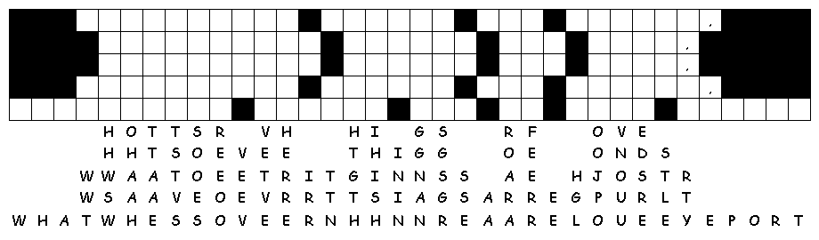
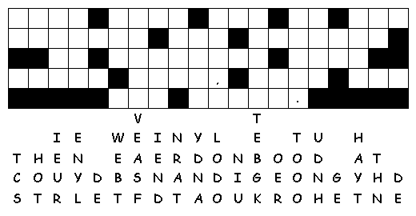

This week's lessons: Exodus 32:1-14 and Psalm 106:1-6, 19-23 or Isaiah 25:1-9 and Psalm 23, Philippians 4:1-9 , Matthew 22:1-14
Middle-School Pew-work
What are some of
the reasons we find it so hard to be satisfied when we have less than
we'd like to have? Do you find yourself "wanting" things
that you don't really need? What might some of these things be? What
makes you want things you don't really need?
__________________________________________________
_______________________________________________________________________________________
_______________________________________________________________________________________
_______________________________________________________________________________________
_______________________________________________________________________________________
_______________________________________________________________________________________
_______________________________________________________________________________________
_______________________________________________________________________________________
_______________________________________________________________________________________
_______________________________________________________________________________________
_______________________________________________________________________________________
_______________________________________________________________________________________
_______________________________________________________________________________________

Next week: Exodus 33:12-23 and Psalm 99 or Isaiah 45:1-7 and Psalm 96:1-9, (10-13), 1 Thessalonians 1:1-10 , Matthew 22:15-22
This week's lessons: Exodus 32:1-14 and Psalm 106:1-6, 19-23 or Isaiah 25:1-9 and Psalm 23, Philippians 4:1-9 , Matthew 22:1-14
Elementary School Pew-work
The king sent some servants to tell the invited tusges ___________ to come to the banquet, but the guests refused. He sent other servants to say to the guests, "The enbqtau ___________ is ready! My cattle and prize calves have all been prepared. Everything is ready. Come to the banquet!"
But the guests did not pay any ttnaentio ___________. Some of them left for their farms, and some went to their places of business. Others grabbed the serntsva ___________, then beat them up and killed them.
This made the king so riofusu ___________ that he sent an army to kill those murderers and burn down their city. Then he said to the servants, "It is time for the inewddg ___________ banquet, and the invited guests don't eedrves ___________ to come. Go out to the street corners and tell everyone you meet to come to the banquet."
1. Who is the
king in the
story?
___________________________________________________________________________
2. Who are the
servants in the
story?
___________________________________________________________________________
3. Who are the
guests in the
story?
___________________________________________________________________________
4. Who are the
other people in the
story?
___________________________________________________________________________
Questions taken from Sunday School Lessons; http://www.sundayschoollessons.com/baplord.htm

Next week: Exodus 33:12-23 and Psalm 99 or Isaiah 45:1-7 and Psalm 96:1-9, (10-13), 1 Thessalonians 1:1-10 , Matthew 22:15-22